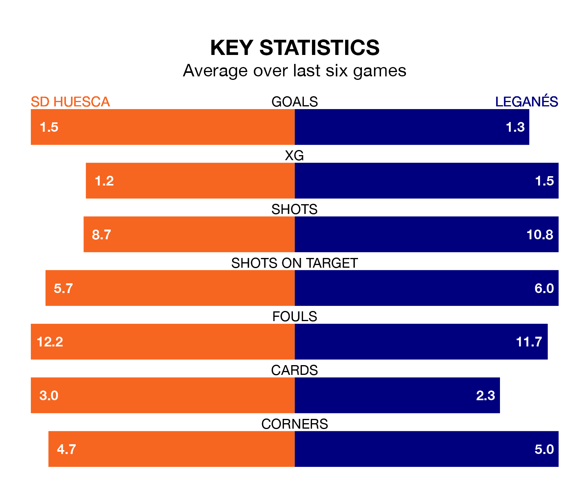

The Segunda División's two meanest defences go head-to-head at the Estadio El Alcoraz on Sunday, when Leganés visit SD Huesca.
No teams have conceded fewer goals than Leganés to date: the away side have let in just 21 goals in 33 games.
Huesca have conceded 23 goals in 33 games, giving them the second tightest back line so far this season.
Key to Leganés's home form has been Diego Conde, who has allowed 0.63 goals past him per 90 minutes, compared to 0.64 for Álvaro Fernández in the opposite net.
Leganés are top of the table after 33 games, of which they have won 17 and drawn nine, earning 60 points.
Huesca are 13 places behind the visitors in 14th, with nine wins and 14 draws putting them on 41 points.
In the last 10 years, Huesca and Leganés have played each other on nine occasions. Huesca won three of them, Leganés five, and they drew once.
On average, Huesca scored 1.0 goal and Leganés 1.4 in those matches.
Their last meeting was on September 9, when Leganés won 2-0 at home.
In Diego García Campos, Leganés have one of the league's sharpest shooters so far this season. He has notched 11 goals in 33 appearances, to sit seventh in the scoring charts.
His goal rate of one every 205 minutes is quicker than that of Samuel Obeng Gyabaa, the home team's top scorer with a goal every 335 minutes, and a total of six goals in 30 games.
Huesca are in reasonable form in the Segunda División, with three wins and three draws from their last six games.
With three wins and a draw over that period, Leganés's form is slightly worse – they have taken 10 points from 18, compared to Huesca's 12.
Huesca's last match was on March 30, a 1-1 draw against Albacete Balompié, with Jorge Pulido Mayoral getting the goal for Huesca.
Leganés drew 0-0 with FC Cartagena last time out, also on March 30.
Updated: 10:31 (UTC), 31/03/24